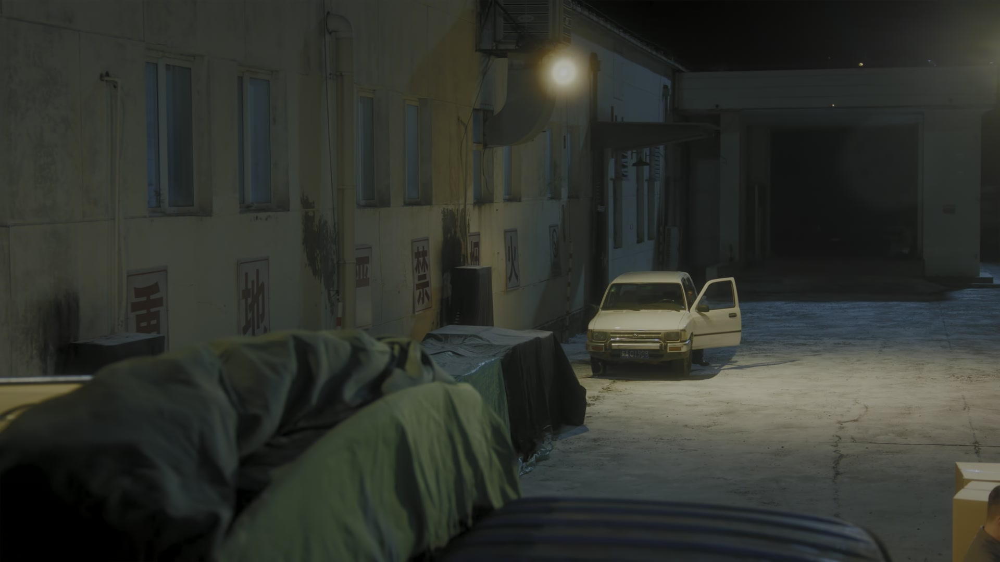

逞强，是给爱你的人最重的伤
情境：亮亮头疼反复发作却不吭声，被老板劝回家养病。
遇到这种情况，可以这样做
- 「疼几回了都不说」——硬扛，扛来的往往是更大的裂缝。
- 报喜不报忧的人，最让身边人后怕。
- 身体的警报，第一次响就该停下手里的活。

Drama Recap · 剧情图文总结
第 31 集 · 祸不单行
胜利带庄庄试婚纱，甜里带着苦；亮亮摔了盘子、被餐厅劝回养病，冉冉在巴黎的德比利桥上挂下爱情锁；陈老板挖走小孟当内鬼，一比一复刻高仿，又甩出两万件的订单和一张假报关单——而夜里，亮亮留下一封绝笔信，不辞而别
这一集好日子与坏消息撞了个满怀：胜利带庄庄试婚纱，幸福在望；亮亮却因反复头疼摔盘子、被劝回家养病，冉冉在巴黎桥头挂下爱情锁。暗处，陈老板把高仿毛绒熊做成「一比一」，两万件订单和假报关单同时递到毛绒熊面前；天亮之前，亮亮留下一封信，走了。
第 31 集，祸不单行。 胜利带庄庄去试婚纱，新娘的裙子一套比一套好看，两个人站在幸福的门口。同一时间，亮亮在后厨又摔了两个盘子——头疼已经不是一回两回了，餐厅老板撂下话：「你要真有病，回家养病。」冉冉在巴黎的德比利桥上买了一把爱情锁。
剧里的鸡毛蒜皮，往往是人生的缩影。这些情节不只是故事——当你在现实中遇到同样的处境时，它们能提醒你：先做什么、别做什么、怎么说才有效。
情境：亮亮头疼反复发作却不吭声，被老板劝回家养病。
情境：毛绒熊现金紧张，宝哥从俄罗斯汇来十万。
情境：曹野投进罗家的五百万打了水漂。
情境：胜利查到陈广发一比一复刻高仿，却忍住没有掀桌。
情境：亮亮带着几乎失明的身体，留下一封信不辞而别。
情境：陈广发用假报关单布局，以为毛绒熊必死。
婚纱店里，庄庄被推着试了一件又一件。胜利嘴上说着「你平时不是不爱穿裙子吗」，眼睛却一直没离开过她。
「庄庄，就穿这件，特别好看。」庄庄白了他一眼，耳根却悄悄红了。
两个人在幸福的门口探头张望，谁也没想到，命运的坏消息已经在路上。
关键台词 · KEY QUOTES
后厨，一声脆响，又一个盘子碎了。餐厅老板皱眉：「亮亮，你今天又摔了两个盘子。」
「他头疼，头疼几回了都不说。」老板把话说重了：「你要真有病，回家养病行不行？」
亮亮弯下腰捡碎片，手抖了一下。他抬起头，笑笑：「行，那我回家养病。」——他谁也没告诉，这病，养不好了。
关键台词 · KEY QUOTES
巴黎，德比利桥。冉冉站在桥上，看着栏杆上密密麻麻的锁。
「传说，在这里挂上爱情锁，两个人就能永远在一起。」她买了一把，认真写下两个人的名字，咔嚓一声扣在桥栏上。
「陶亮亮，你要是在这儿多好啊。」风把塞纳河的水吹皱了，也把她的思念带到了北京。
关键台词 · KEY QUOTES
陈老板登门「考察」毛绒熊的厂子，把车间、仓库、流水线看了个遍：「你们这厂子，我看着不错啊。」话里带话，眼睛一直在进货单上打转。
送走陈老板，胜利手机响了：「胜利，你宝哥给你汇了十万。」宝哥在俄罗斯那头爽朗地笑，说兄弟有难，哪有不帮的道理。
「宝哥，你放心，这笔钱我一定连本带利还你。」胜利捏着手机，眼圈有点热。
关键台词 · KEY QUOTES
罗家，曹野把「投资」两个字说得越来越响，罗小姐却端起了架子：「我爸说了，生意上的事，得按规矩来。」一条「指路」的话，让曹野以为自己摸到了门。
另一边，南方雪灾的消息传来。庄庄提议：「咱们捐一批羽绒服过去。」胜利一口答应，连夜组织装车。
毛绒熊刚站稳脚跟，就把热乎气儿分了出去——钱是冷的，心是热的。
关键台词 · KEY QUOTES
冉冉要去里昂了。亮亮系着围裙，在厨房里忙活：「上车饺子，下车面，出门之前，得吃顿饺子。」
一家人围坐着吃饺子，冉冉给他夹菜：「我走了，你得照顾好自己。」亮亮咧嘴笑：「等我这边的事办完，就去里昂找你。」
谁也没注意到，他往冉冉的行李箱里，悄悄塞了一封信。
关键台词 · KEY QUOTES
陈老板的厂里灯火通明。他把小孟提供的版型往桌上一摊：「照着毛绒熊做，一模一样的，成本压到最低。」
「小孟，你这次立了大功。」陈老板拍着小孟的肩，笑得像只吃饱的狐狸。
图纸落进车间的那一刻，一场「李鬼斗李逵」的暗战正式开打。
关键台词 · KEY QUOTES
曹野终于回过味儿来：罗家那条「按规矩来」的路，是个连环套。他把身家投了进去，五百万，全打了水漂。
「我投进去的五百万，全打了水漂！罗家……他们才是骗子！」他冲到罗氏公司，人去楼空，只剩一把冷板凳。
「曹爷这个傻子也有今天，骗人中骗，真是报应。」冬去春来的屋檐下，有人这样评价他——只是报应两个字，从来不会只落在一个人头上。
关键台词 · KEY QUOTES

一批面料让胜利起了疑：「这批特殊面料，全城只有三个厂能做，我挨个查。」顺着供应商，他一路追到陈老板的仓库。
深夜，仓库的卷帘门拉开，满屋的毛绒熊和他厂里的一模一样——一比一复刻，连拉链的款式都照抄了。
「陈广发，你终于露面了。你造假、盗版，还盗用我的品牌！」陈广发被他堵了个正着，却笑得从容：「你查出来了，又能把我怎么样？」
胜利咬咬牙没有掀桌——他忍住了。因为一张更大的网，正在陈广发自己脚下铺开。
关键台词 · KEY QUOTES
陈广发的订单递到了毛绒熊面前：两万件。接了，毛绒熊的现金流要见底；不接，等于把市场拱手让给高仿。
「这两万件，我们接了。」胜利在合同上签下名字。账上的钱不够——宝哥的十万、工厂的流水、抵押的新房，全都押了上去。
「大不了，把咱们的新房也押上。」庄庄在电话那头，语气比他还稳。
他们不知道，陈广发等的正是这一刻：订单拖垮毛绒熊的现金，高仿再一拥而上。
关键台词 · KEY QUOTES
陈广发的办公室里，电话通了：「给毛绒熊做一份假的报关单，让他们这批货进不了海关。」
「到时候，海关扣的是他们，不是咱们。」他挂了电话，得意地转着椅子。
他以为自己赢定了——只是这一回，他算漏了一件事：那两万件货，从头到尾就不是毛绒熊给他准备的。
关键台词 · KEY QUOTES
亮亮走了。他没有跟任何人告别，只在行李箱里留下了一封信。
冉冉从里昂赶回来，展开信纸：「冉冉，当你看到这封信的时候，我已经走了。我的身体出了毛病，法国和国内都治不好，我不想拖累你。虽然我现在几乎看不见，但我的心，一直看得见你。」
「你一定要幸福。」信的最后一句，笔迹微微发抖。
冉冉攥着信冲出冬去春来的大门：「亮亮！亮亮——」雪夜里，只有她一个人的喊声。
关键台词 · KEY QUOTES
带庄庄试婚纱，把幸福挂在脸上；查出陈广发的一比一高仿后按兵不动，接下两万件订单把身家押上去——他等的，是对方先露破绽。
张罗南方雪灾捐衣，把热乎气儿分给灾区；订单缺钱时一句「大不了把新房押上」，比谁都稳。
头疼到摔盘子仍不肯说，被劝回家养病；给冉冉包了送行的饺子，夜里留下一封绝笔信，带着几乎失明的眼睛独自离开。
在德比利桥挂下爱情锁，许愿永远在一起；收到绝笔信后冲出大门，在雪夜里一遍遍喊「亮亮」。
收买小孟拿到版型，一比一复刻毛绒熊；甩出两万件订单拖垮对手现金，又伪造报关单，要把毛绒熊的货扣死在海关。
把版型、面料、进货底细全部交给陈广发，换来一句「立了大功」——他以为拿到了好处，却不知道自己已经上了别人的名单。
把身家投进罗家的连环套，血本无归，冲到罗氏公司只剩一把空椅子。
从俄罗斯汇来十万，一句「兄弟有难，哪有不帮的道理」，成了毛绒熊最硬的后援。
「就穿这件，特别好看。」胜利第一次把庄庄看进眼里——苦日子熬到头的人，配得上这身白纱。
冉冉把两个人的名字锁在巴黎的桥栏上，许愿永远在一起——她不知道，那个「永远」正在北京打包离开。
深夜拉开卷帘门，满仓库一模一样的毛绒熊。「你查出来了，又能把我怎么样？」——胜利忍住了，这才是狠人。
「大不了，把咱们的新房也押上。」两万件订单，抵押的房子，毛绒熊把全部身家压在了这一把。
「虽然我现在几乎看不见，但我的心，一直看得见你。」亮亮的信，是全剧最重的告白，也是全剧最狠的告别。
查到高仿却不掀桌，接下两万件订单——胜利的反击还没开始，他究竟给陈广发布了一张什么样的网？
「法国和国内都治不好」——亮亮拖着几乎失明的身体独自离开，他还能回到冬去春来吗？
陈广发以为那两万件货是毛绒熊的软肋，可那批货「是给我们俄罗斯的朋友准备的」——这个局，会怎么翻？
被夸「立了大功」的小孟，还不知道自己已经被钉上了「内鬼」的名单——他还有回头路吗？